Procedure
Drag the file tool along the bevelled edge of the first plate to remove rust, dirt, and oxide layers. 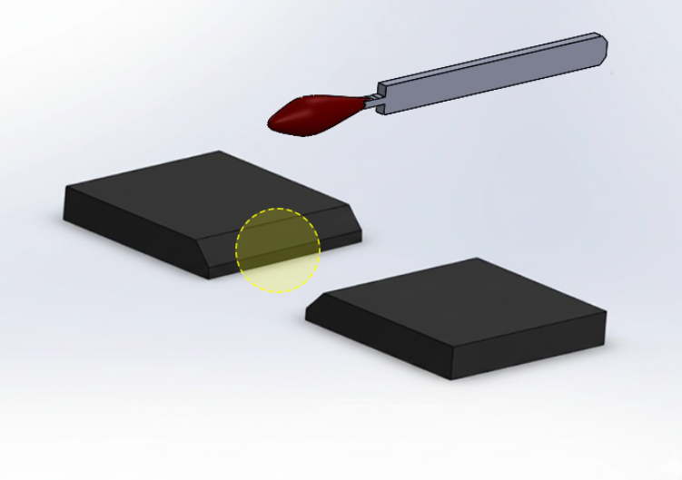 The bevel edge of the first plate is now clean and ready for welding. 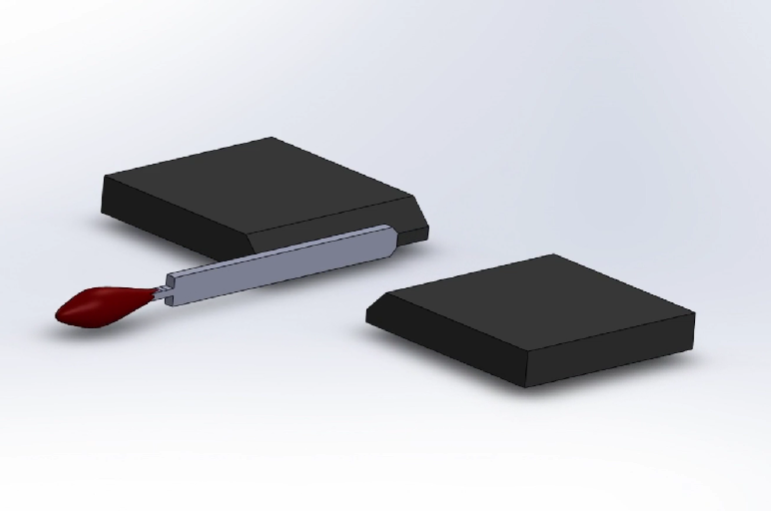 Place the file tool at the highlighted area on the bevelled edge of the second plate. 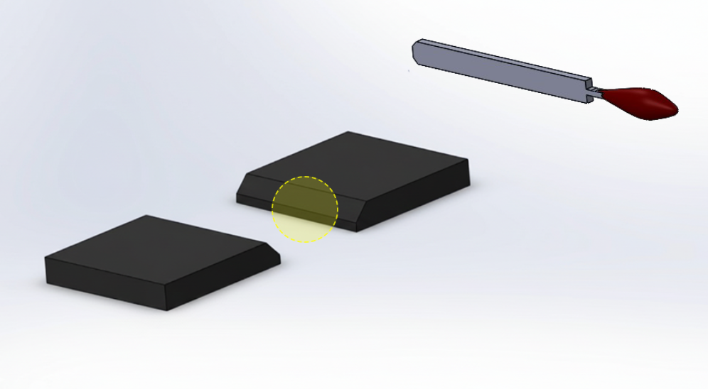 Drag the file tool along the bevel edge to clean the second plate surface. 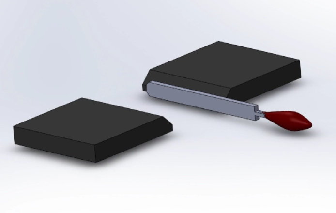 Click on the red marked area to slide and position the first plate on the worktable. 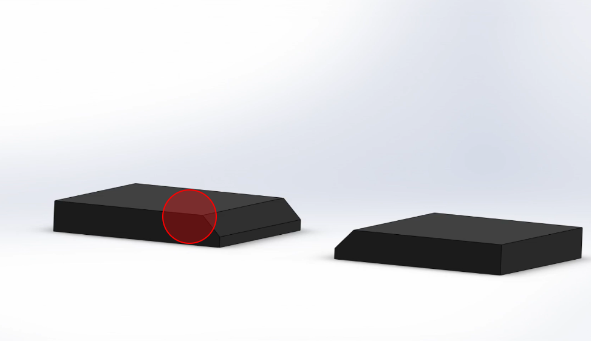 Click on the red marked area to align the second plate and form a proper V-groove. 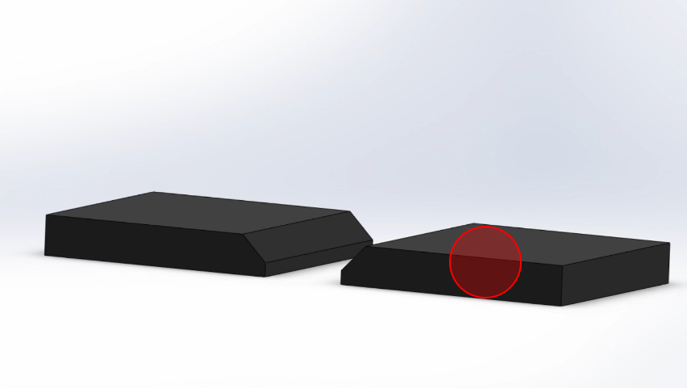 Adjust the acetylene regulator until the pressure gauge reads 10 psi. 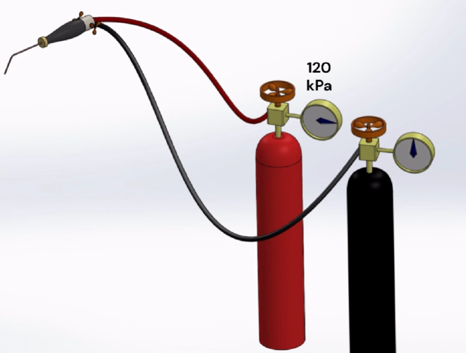 Adjust the oxygen regulator until the pressure gauge reads 25 psi. 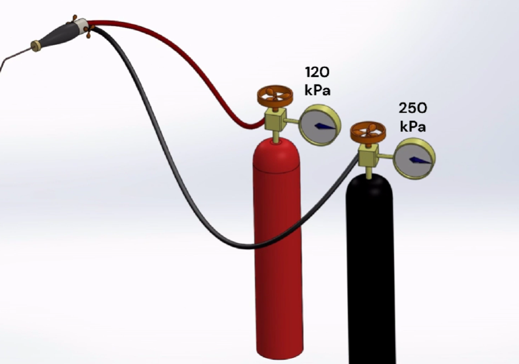 Slowly open the acetylene valve on the torch handle to allow gas flow. 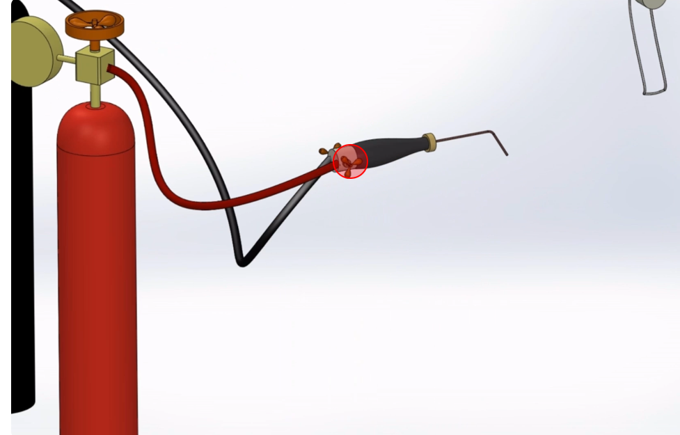 Use a spark lighter to ignite the acetylene gas and produce a yellow flame. 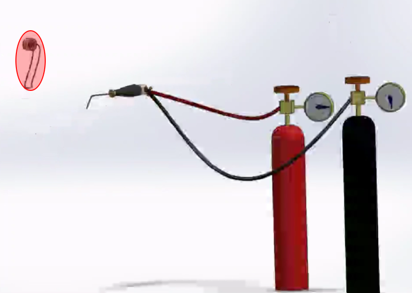 Open the fuel gas valve slightly and ignite the gas using a spark lighter to produce an initial flame. 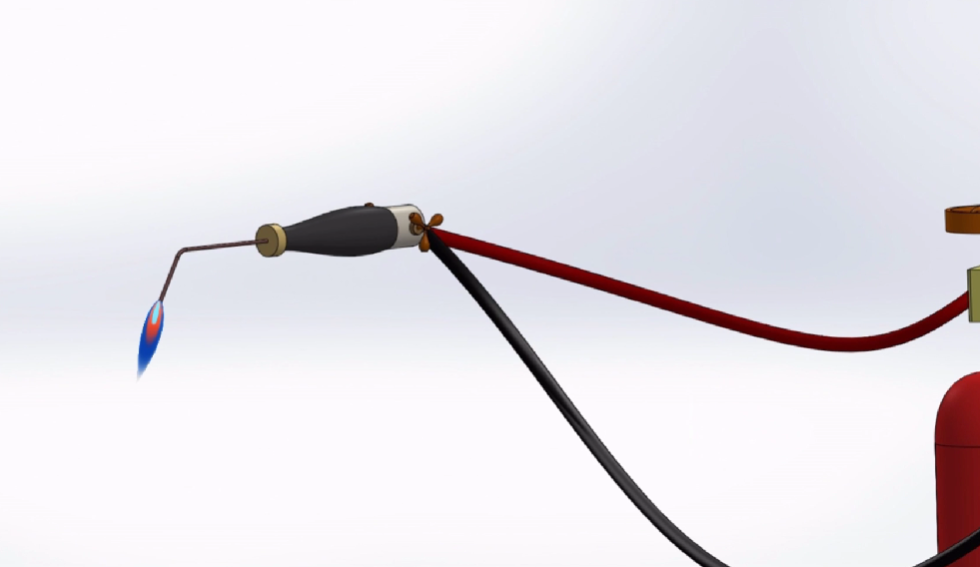 Gradually open the oxygen control valve to adjust the flame characteristics. 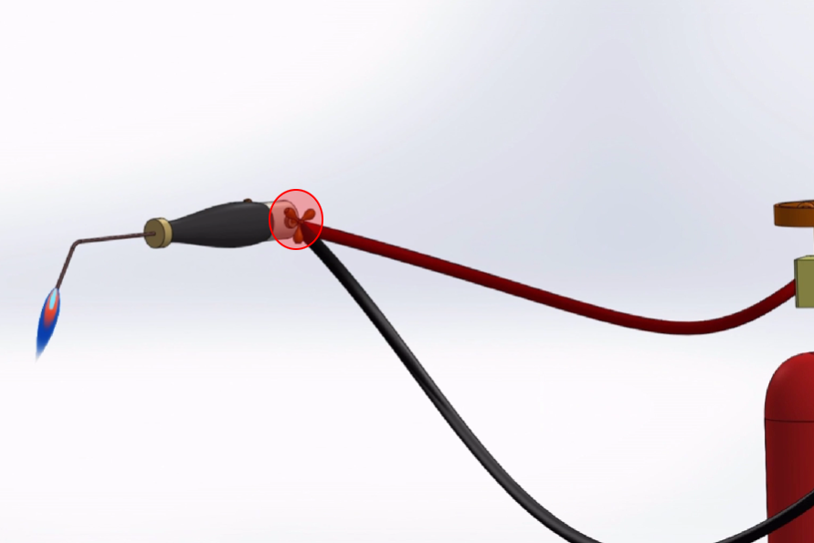 Continue adjusting the oxygen valve until a stable blue neutral flame is obtained, indicating proper gas balance. 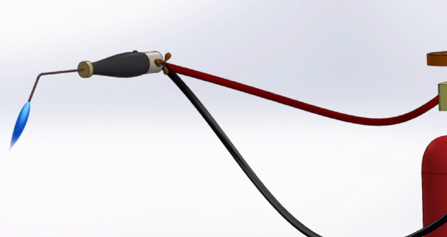 Position the torch at the highlighted location for the first tack weld. 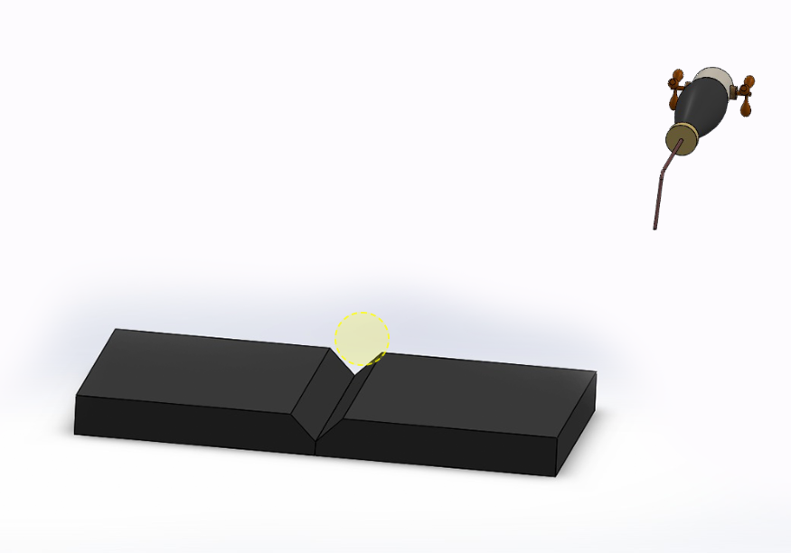 Apply heat until molten metal forms a tack weld at one end of the joint. 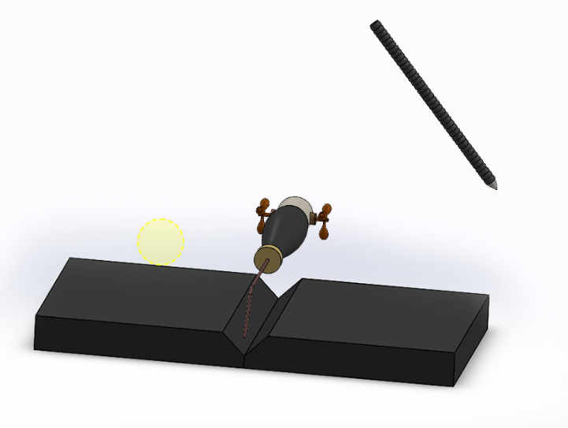 Move the torch to the opposite end of the joint. 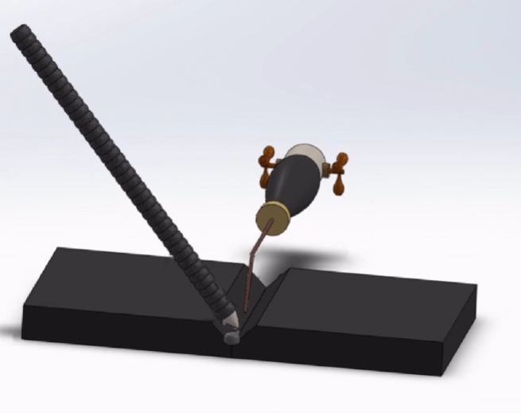 Form the second tack weld to firmly hold both plates. 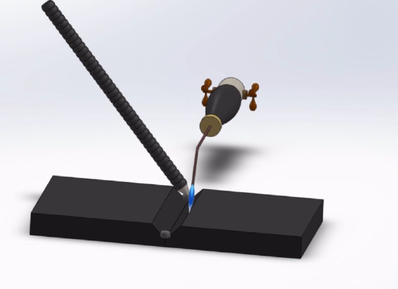 Move the torch steadily along the V-groove to produce a uniform weld bead. 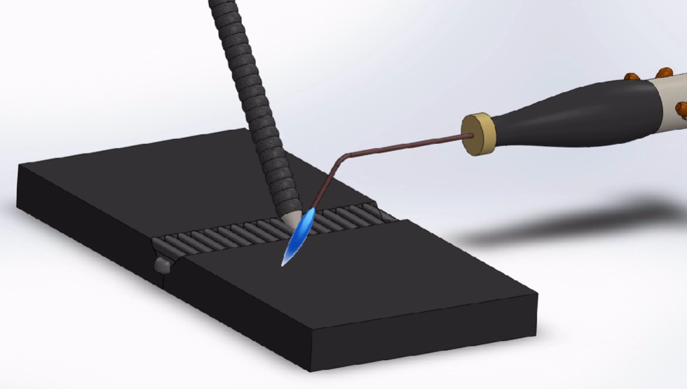 The weld bead is completed and covered with slag. 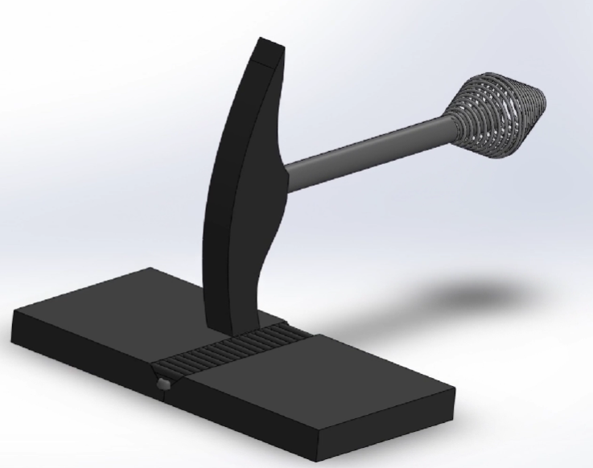 Use a chipping hammer to gently remove slag from the weld. 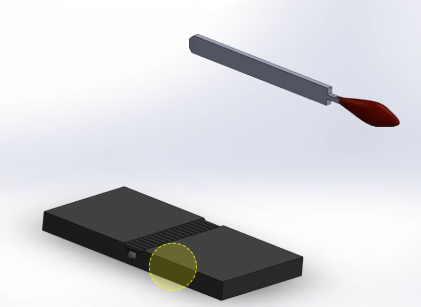 File the weld bead to improve surface finish. 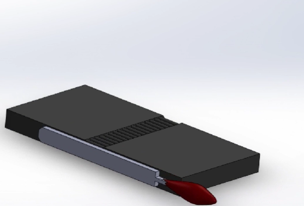Step 1: Cleaning of first plate edge
Step 2: First plate edge cleaned
Step 3: Preparation for second plate cleaning
Step 4: Cleaning of second plate edge
Step 5: Aligning first plate
Step 6: Aligning second plate
Step 7: Setting acetylene gas pressure
Step 8: Setting oxygen gas pressure
Step 9: Opening acetylene valve
Step 10: Ignition of flame
Step 11: Adjustment to neutral flame
Step 12: Add oxygen to the flame
Step 13: Achieve neutral flame
Step 14: Positioning for first tack weld
Step 15: First tack welding
Step 16: Second tack weld positioning
Step 17: Second tack welding
Step 18: Performing continuous welding
Step 19: Weld bead completion
Step 20: Slag removal
Step 21: Dressing of weld bead